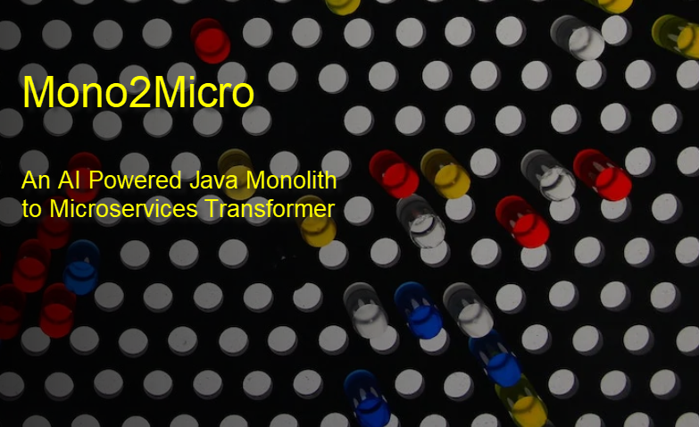

Mono2Micro Workshop

Tuesday Dec 8, 2020
Time: 2:00 pm - 5:00 pm
Slack Channel for class communications: #XXXXXXX
(In the IBM Cloud team)
Workshop Introduction
Of all the variants of application modernization, refactoring to microservices is the hardest, but when properly implemented, provides the maximum ROI.
Mono2Micro semi-automates the refactoring process using AI and can provide a huge acceleration to and significantly economize the task of moving Java monoliths to containers in the cloud.
In this hands on workshop you will refactor a small but typical Java EE into deployable microservices via the following steps:
- monolith code instrumentation
- generation of runtime traces
- generation of AI-recommended partitions
- customization of partitions
- code generation, and finally
- the deployment of the partitions as executable microservices in docker containers.
Presentations
Mono2Micro Presentation material
password to access material: XXXXX
Hands on Labs
Select "Labs" from the menu to view the lab details, and get links to the lab guide and lab environments.